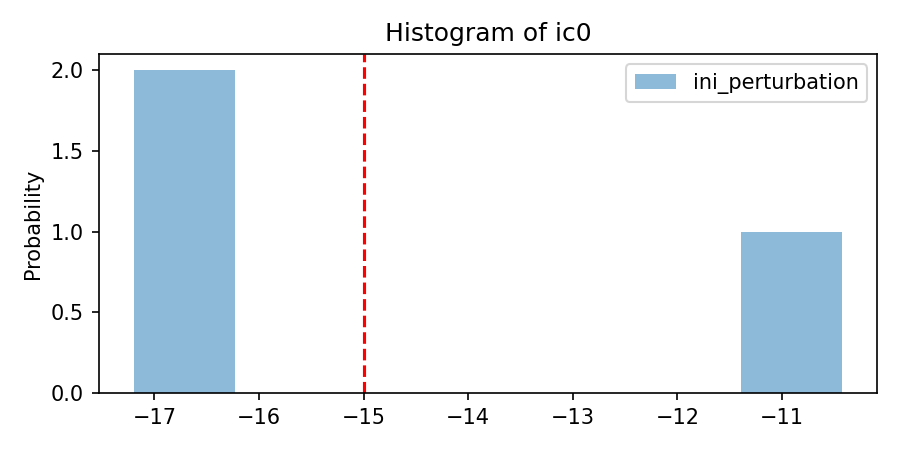
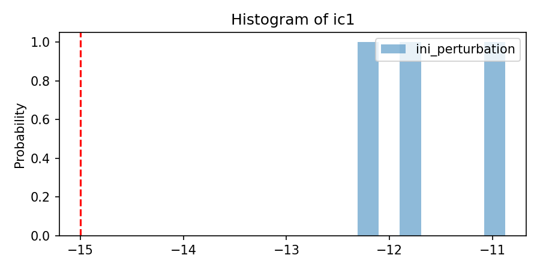
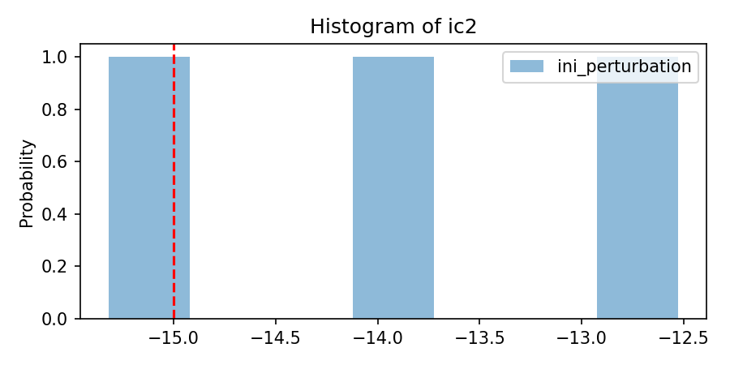
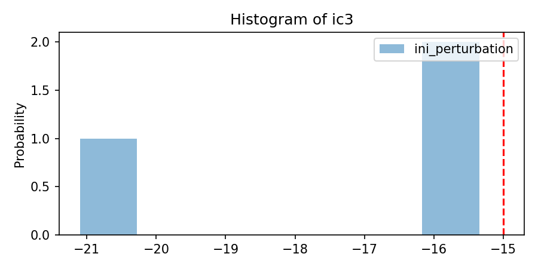
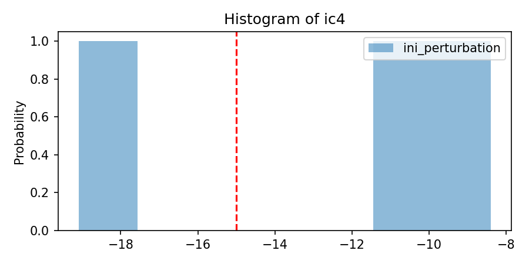
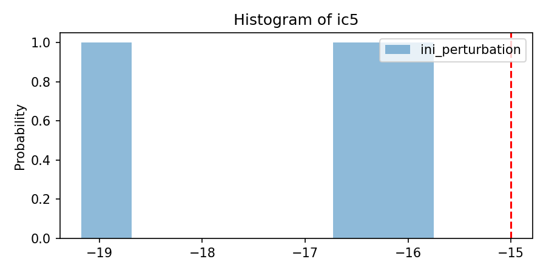

Note
Go to the end to download the full example code.
DA with Random Initial Conditions on Soil Layers#
This notebook demonstrates how to create an ensemble of models with varying initial conditions for different soil layers. By introducing randomness into the initial conditions, we can better simulate the natural variability in soil properties and improve the robustness of data assimilation (DA) processes.
Estimated time to run the notebook = 2min
import os
import numpy as np
import pyvista as pv
from pyCATHY.DA.perturbate import perturbate_parm
from pyCATHY.DA import perturbate
from pyCATHY.DA.cathy_DA import DA
from pyCATHY.plotters import cathy_plots as CTp
nlay = 6
scenario = {
'per_name':['ic'],
'per_type': [[None]*nlay],
'per_nom':[[-15]*nlay],
'per_mean':[[-15]*nlay],
'per_sigma': [[3.75]*nlay],
'per_bounds': [[None]*nlay],
'sampling_type': [['normal']*nlay],
'transf_type':[[None]*nlay],
'listUpdateParm': ['St. var.']
}
simuWithDA = DA(
dirName='./',
prj_name= 'DA_with_non_uniform_ic',
notebook=True,
)
# linear z depth
# ---------------
zb = np.linspace(0, 2, nlay)
nstr = len(zb)
zr = list(np.ones(len(zb))/nstr)
simuWithDA.update_prepo_inputs(
nstr=nstr,
zratio=zr,
base=max(zb),
)
🏁 Initiate CATHY object
🔄 Update hap.in file
🔄 Update dem_parameters file
🔄 Update dem_parameters file
simuWithDA.update_dem_parameters()
simuWithDA.update_veg_map()
simuWithDA.update_soil()
🔄 Update dem_parameters file
─────────────────────────────────────────────────────────────────────────────── ⚠ warning messages above ⚠ ───────────────────────────────────────────────────────────────────────────────
The parm dictionnary is empty
Falling back to defaults to update CATHYH
This can have consequences !!
──────────────────────────────────────────────────────────────────────────────────────────────────────────────────────────────────────────────────────────────────────────────────────────
🔄 Update parm file
🔄 Update soil
homogeneous soil
simuWithDA.NENS = 3
list_pert = perturbate.perturbate(
simuWithDA,
scenario,
simuWithDA.NENS,
)
var_per_dict_stacked = {}
for dp in list_pert:
var_per_dict_stacked = perturbate_parm(
var_per_dict_stacked,
parm=dp,
type_parm = dp['type_parm'], # can also be VAN GENUCHTEN PARAMETERS
mean = dp['mean'],
sd = dp['sd'],
sampling_type = dp['sampling_type'],
ensemble_size = dp['ensemble_size'], # size of the ensemble
per_type= dp['per_type'],
nlayers = nlay,
savefig= os.path.join(simuWithDA.workdir,
simuWithDA.project_name,
simuWithDA.project_name + dp['savefig'])
)
- 
- 
- 
- 
- 
- 
/home/z0272571a@CAMPUS.CSIC.ES/miniconda3/envs/myenv/lib/python3.10/site-packages/scipy/stats/_qmc.py:993: UserWarning: The balance properties of Sobol' points require n to be a power of 2.
sample = self._random(n, workers=workers)
This in normally directly called when using run_DA_sequential()
simuWithDA._create_subfolders_ensemble()
simuWithDA.update_ENS_files(var_per_dict_stacked,
var_per_dict_stacked.keys(),
cycle_nb=0
)
😟 processor exe not found
🔄 Update ensemble
🍳 gfortran compilation
👟 Run preprocessor
🔄 Update parm file
🛠 Recompile src files [4s]
🍳 gfortran compilation [9s]
b''
👟 Run processor
Single value detected for ic ==> assumming it homogeneous
Single value detected for ic ==> assumming it homogeneous
Single value detected for ic ==> assumming it homogeneous
Single value detected for ic ==> assumming it homogeneous
Single value detected for ic ==> assumming it homogeneous
Single value detected for ic ==> assumming it homogeneous
Single value detected for ic ==> assumming it homogeneous
Single value detected for ic ==> assumming it homogeneous
Single value detected for ic ==> assumming it homogeneous
Single value detected for ic ==> assumming it homogeneous
Single value detected for ic ==> assumming it homogeneous
Single value detected for ic ==> assumming it homogeneous
Single value detected for ic ==> assumming it homogeneous
Single value detected for ic ==> assumming it homogeneous
Single value detected for ic ==> assumming it homogeneous
Single value detected for ic ==> assumming it homogeneous
Single value detected for ic ==> assumming it homogeneous
Single value detected for ic ==> assumming it homogeneous
pl = pv.Plotter(shape=(1,2))
for i, ensi in enumerate([1,3]):
DApath = f'DA_Ensemble/cathy_{ensi}/vtk/'
path = os.path.join(simuWithDA.workdir,
simuWithDA.project_name,
DApath,
simuWithDA.project_name + '.vtk'
)
pl.subplot(0,i)
CTp.show_vtk(path,
'ic_nodes',
ax=pl,
clim = [-25,-5],
#show_scalar_bar=True,
)
_ = pl.add_legend('')
pl.add_title(f'Ensemble nb:{ensi}')
pl.show()
plot ic_nodes
plot ic_nodes
Total running time of the script: (0 minutes 10.622 seconds)